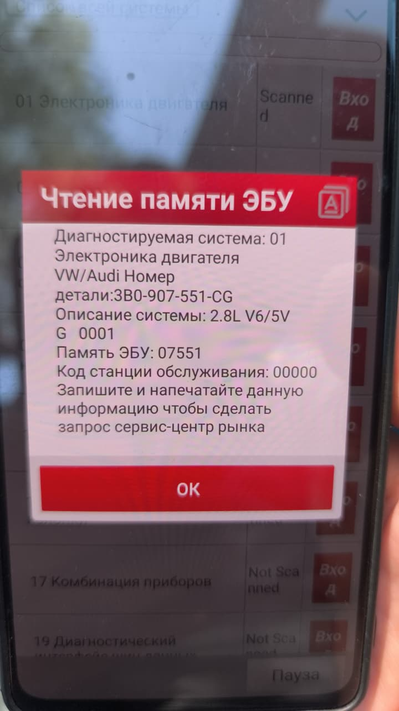
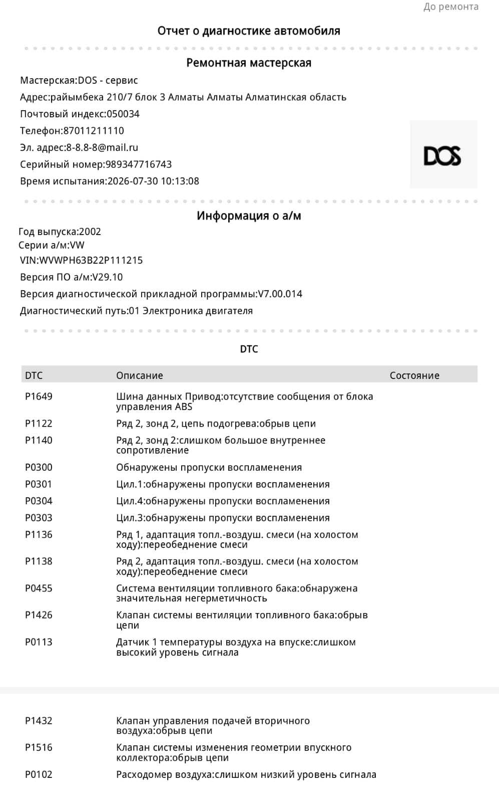
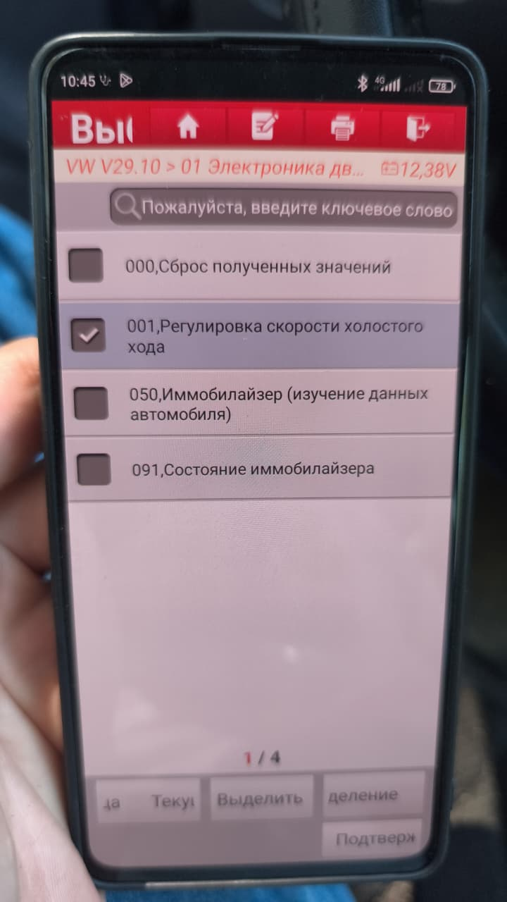
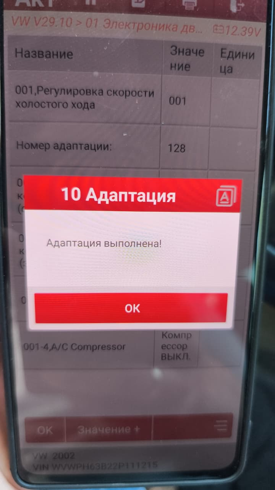
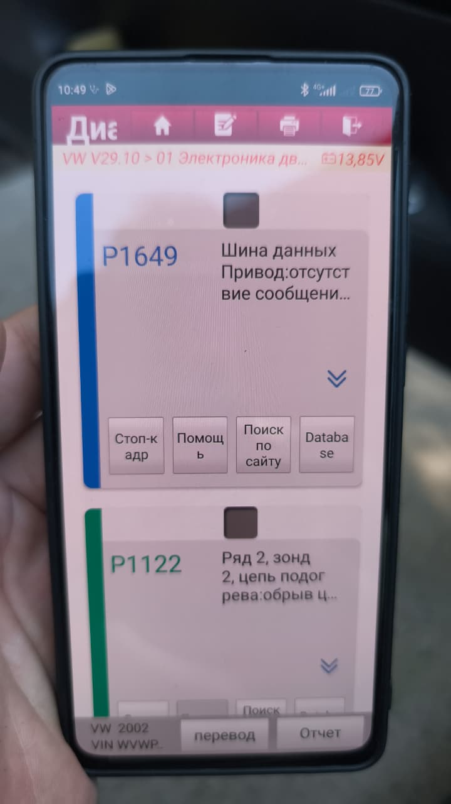

🚗 Volkswagen Passat 2002 — плавающий холостой ход, пропуски зажигания и подсос воздуха

🚨 Жалоба владельца
На компьютерную диагностику поступил Volkswagen Passat 2002 года выпуска.
Со слов владельца автомобиль беспокоили следующие неисправности:
- ⚠️ плавающие обороты холостого хода;
- ⚠️ нестабильная работа двигателя;
- ⚠️ периодические пропуски зажигания;
- ⚠️ неровная работа на холостом ходу.
Для определения причины была проведена комплексная компьютерная диагностика двигателя и электронных систем автомобиля.
🔍 Что показала компьютерная диагностика?

После подключения диагностического оборудования была выполнена полная диагностика электронных блоков управления.
Были обнаружены следующие ошибки:
- ⚠️ P1649 — отсутствует сообщение от блока управления ABS.
- ⚠️ P1122 — обрыв цепи подогрева второго лямбда-зонда.
- ⚠️ P1140 — повышенное внутреннее сопротивление второго лямбда-зонда.
- ⚠️ P0300 — множественные пропуски воспламенения.
- ⚠️ P0301 — пропуски воспламенения в 1 цилиндре.
- ⚠️ P0303 — пропуски воспламенения в 3 цилиндре.
- ⚠️ P0304 — пропуски воспламенения в 4 цилиндре.
- ⚠️ P1136 — переобеднение топливовоздушной смеси (ряд 1).
- ⚠️ P1138 — переобеднение топливовоздушной смеси (ряд 2).
- ⚠️ P0455 — значительная негерметичность системы вентиляции топливного бака.
- ⚠️ P1426 — обрыв цепи клапана продувки адсорбера.
- ⚠️ P0113 — высокий уровень сигнала датчика температуры впускного воздуха.
- ⚠️ P1432 — обрыв цепи клапана подачи вторичного воздуха.
- ⚠️ P1516 — обрыв цепи клапана изменения геометрии впускного коллектора.
- ⚠️ P0102 — низкий уровень сигнала расходомера воздуха (ДМРВ).
Полученные данные указывали сразу на несколько неисправностей, влияющих на работу двигателя.
🛠️ Выполненные работы
После анализа результатов диагностики было принято решение начать с обслуживания дроссельного узла.
Выполнено:
- ✅ полная компьютерная диагностика автомобиля;
- ✅ демонтаж дроссельной заслонки;
- ✅ тщательная очистка внутренних каналов и заслонки от загрязнений;
- ✅ проверка разъёма и контактов дроссельной заслонки;
- ✅ сборка узла;
- ✅ адаптация дроссельной заслонки с помощью диагностического оборудования;
- ✅ повторная проверка работы двигателя и текущих параметров.
После адаптации холостой ход стал значительно стабильнее.

✅ Результат
После выполненных работ:
- ✔️ двигатель стал работать значительно ровнее;
- ✔️ восстановилась корректная работа дроссельной заслонки;
- ✔️ холостой ход стал стабильнее;
- ✔️ выполнена повторная проверка системы.

При этом диагностика показала дополнительные неисправности, требующие дальнейшего ремонта.
📋 Рекомендации по дальнейшему ремонту
Во время диагностики были выявлены неисправности, которые не относятся непосредственно к загрязнению дроссельной заслонки.
Для полного устранения всех проблем владельцу рекомендовано:
- 🔧 заменить свечи зажигания;
- 🔧 заменить высоковольтные провода;
- 🔧 заменить неисправные лямбда-зонды;
- 🔧 проверить герметичность системы вентиляции топливного бака (EVAP);
- 🔧 проверить клапан продувки адсорбера;
- 🔧 выполнить диагностику расходомера воздуха (ДМРВ);
- 🔧 устранить причины подсоса воздуха;
- 🔧 после ремонта выполнить повторную компьютерную диагностику.
💡 Рекомендация автоэлектрика
Плавающий холостой ход далеко не всегда связан только с загрязнённой дроссельной заслонкой.
Причиной также могут быть:
- 🔥 пропуски воспламенения;
- 🌬️ подсос воздуха во впускной системе;
- 🌡️ неисправные датчики;
- ⛽ проблемы системы вентиляции топливного бака;
- 📡 неисправные лямбда-зонды;
- 💨 неисправный расходомер воздуха.
Именно поэтому перед ремонтом важно выполнить полноценную компьютерную диагностику, а не менять детали наугад.
❓ Когда необходима компьютерная диагностика?
Рекомендуется обратиться на диагностику, если:
- двигатель работает нестабильно;
- плавают обороты холостого хода;
- автомобиль плохо разгоняется;
- увеличился расход топлива;
- загорелся индикатор Check Engine;
- появились пропуски воспламенения;
- ощущается запах топлива или есть признаки подсоса воздуха.
⚙️ Что входит в компьютерную диагностику?
Во время диагностики выполняются:
- 💻 считывание ошибок всех электронных блоков;
- 📊 анализ текущих параметров двигателя;
- ⚡ проверка системы зажигания;
- 🌬️ диагностика системы впуска;
- ⛽ проверка системы вентиляции топливного бака;
- 🔧 проверка исполнительных механизмов;
- 🔍 анализ работы датчиков;
- ✅ рекомендации по дальнейшему ремонту.

👨🔧 Работы выполнил автоэлектрик Олег.
☎️ 8-701-121-11-10 Олег
Читайте также: «Volkswagen Touareg 2012 плавают обороты на прогреве» и «Hyundai Tucson 2018 плавают обороты».